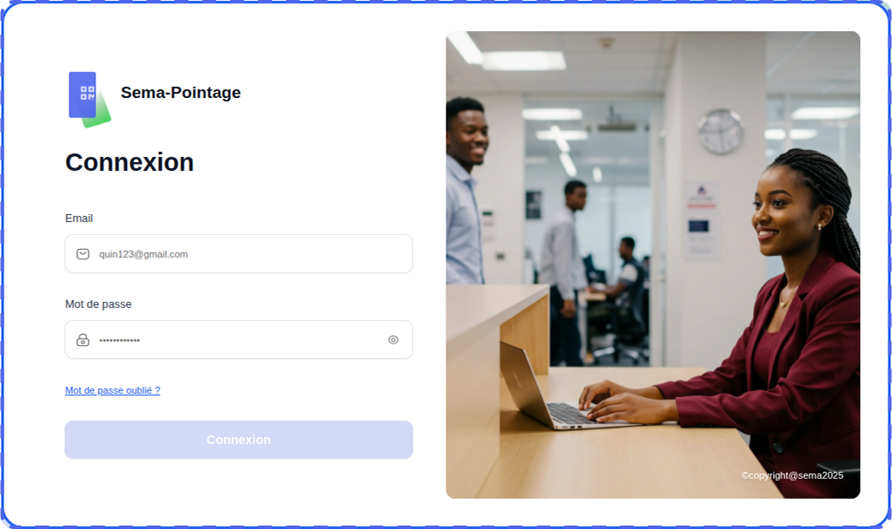

Pointage Fr documentation
Outil de pointage
Guide utilisateur
Le pointage est le processus qui consiste à enregistrer les heures d’arrivée et de départ des employés sur leur lieu de travail, afin de suivre efficacement leur présence.
Présentation générale
Fonctionnalités de la plateforme